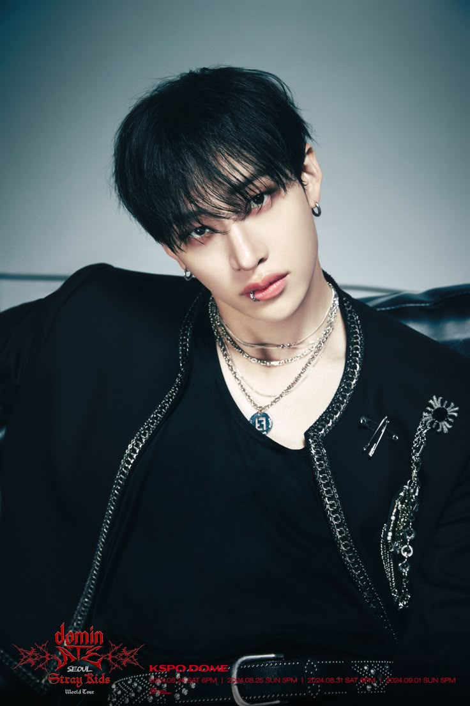
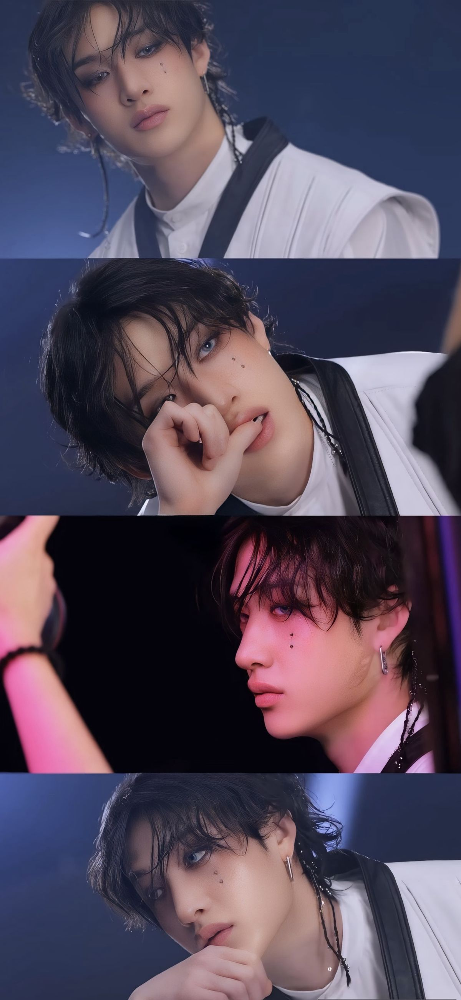
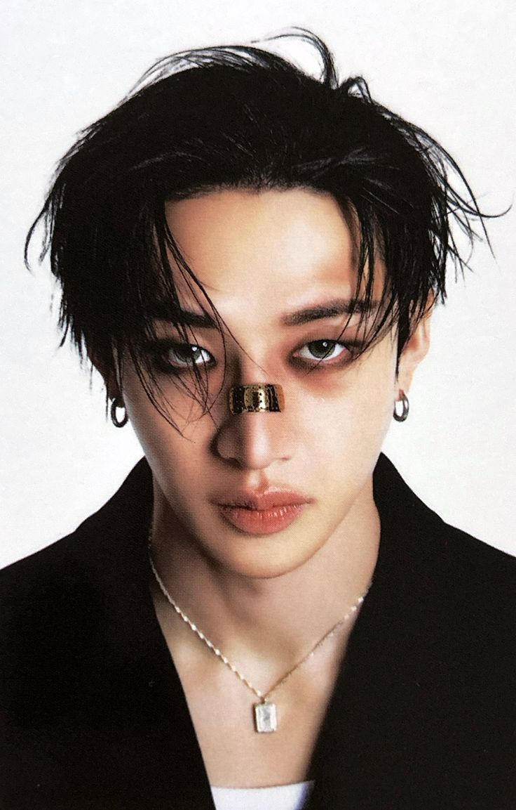

Bang Christopher (방찬)
Perfil del Artista
Programas de Televisión
Stray Kids (Mnet, 2017) - Programa de supervivencia
Programas de Radio
(SBS) Choi Hwajeongs Power Time (12.04.2019) (Junto a Hyun Jin y Felix)
(SBS Radio) NCT Night Night (09.09.2018) (Junto a Woo Jin, Lee Know y Chang Bin)
(SBS) POWER FM Park Sohyun's LOVE GAME (03.11.2018) (Junto a Hyun Jin e I.N)
Anuncios Comerciales
2011: Australian Beef
Colaboraciones en Videos Musicales
TWICE - Like Ooh Ahh (2015) - Aparición como zombie
Miss A - Only You (2015)
Curiosidades
Estudios: Newtown High School of the Performing Arts, Cheongdam High School.
Periodo de entrenamiento: 7 años en JYP Entertainment.
Modelos a seguir: Drake, RM de BTS, Cristiano Ronaldo y su padre.
Hobbies: Hacer deportes y atletismo.
Idiomas: Inglés (Lengua materna), Coreano (Fluido), Japonés (Intermedio), Chino (Básico) y Griego (Básico).
Vivió en Nueva Gales del Sur en 5 suburbios diferentes en Australia: Strathfield, Drummoyne, Enfield, Belmore, Greenacre.
Entró a JYP en el 2010 tras pasar una audición multitudinaria en Australia.
Fue candidato para debutar en GOT7 antes de conformar el grupo Stray Kids.
Cuando asistía a clases de música clásica aprendió ballet y danza contemporánea.
Ha compuesto y producido la inmensa mayoría de las pistas discográficas de 3RACHA y Stray Kids.
Posee más de 113 canciones registradas formalmente a su nombre en la Korea Music Copyright Association (KOMCA).
Galería de Fotos




